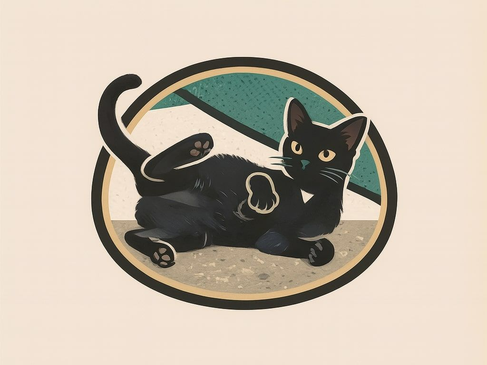

Casa Otium
Per tutte le code... Questa pagina è svanita!
Abbiamo chiesto a draghi, cani, unicorni, gatti e grifoni, ma nessuno ha visto la pagina smarrita.
Forse si è nascosta dentro un portale dimensionale (succede più spesso di quanto pensi).
Puoi tornare alla home, niente sparizioni impreviste lì.
Torna alla home